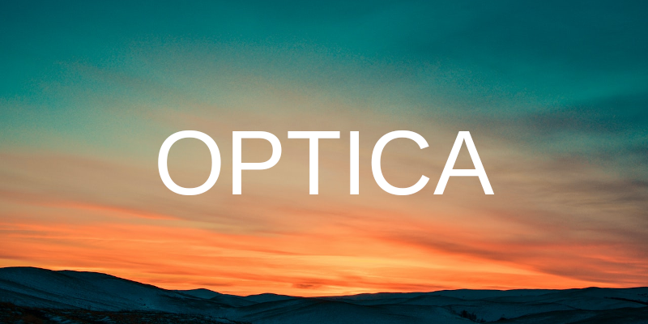
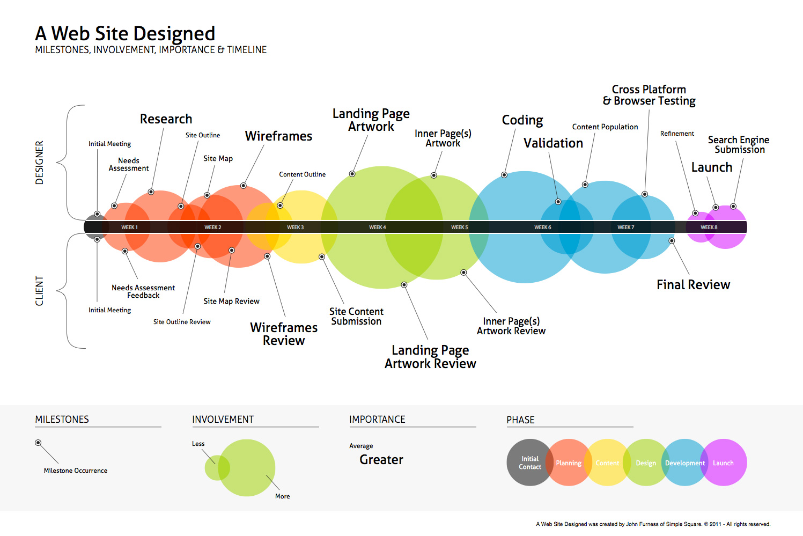
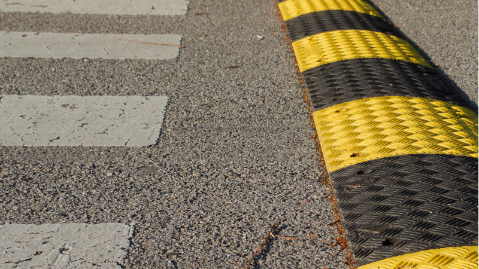

Optica
2021-01-07

Overview
This idea was born out of frustration. I'm a big picture and systems thinker. Many of the previous companies I've worked for had horribly inefficient bureaucratic workflows that were needlessly confusing.
Because they had adapted to their system they weren't open to streamlining it. Which made my job ten times harder than it needed to be.
I imagined a more streamlined workflow with automated reporting and alerts to allow managers to track what was happening without disturbing developers. Reducing and removing company processes that interfere with getting the work done.
Optica is my idea for an open source web application that gives managers the ability to monitor projects and company information in a single admin panel. Its purpose is to reduce the amount of emails and meetings that managers and other employees have to deal with on a daily basis.
Here's an example of what the interface might look like.

Managers can connect the Optica admin panel to internal company blogs, knowledge base articles, ticketing systems, git repos, and any other sources of information they might need.
Most of the emails managers recieve are non-actionable information dumps. These emails quickly get buried inside of email systems.
If those emails were converted to posts on an internal company blog. They would be easy to search, share, and bookmark. A simple RSS feed would make those posts available within Optica.
Web Development Assembly Line

Building web applications is a parallel and iterative process. Lots of moving parts, many people all working together on different elements at the same time, revisions, decisions by committee, and approvals. It is often frustrating and exhausting.
That's why it makes sense to create a digital assembly line. Breaking the whole project down into specific chunks for different departments to deal with. Further breaking down those chunks into individual tasks that are turned into tickets and assigned to writers, designers, and developers who will work to complete the tasks.
In most companies they manage all these moving parts using email, spreadsheets, and wasting hours of the day in meetings.
Optica can be integrated into existing systems to streamlin the overall workflow. Giving executives, department heads, and managers real-time access to what is happening on their digital assembly line. Without stopping productivity to hold yet another meeting. Or, burying co-workers in emails. Only to be further buried in more reply emails.
The entire assembly line can be displayed in Optica as a large progress bar with different colored sections. Which, when clicked on, will open into smaller progress bars for specific sections.
Optica can pull data from ticketing systems and git repos to provide a clear view of the progress of every individual involved. Any bottlenecks or blockers can be flagged in the ticketing system and show up on the Optica admin panel as an alert.
Allowing Designers and Developers to keep working on other tasks while managers find other resources to fix or work around blockers.
Speed Bumps

A wise manager said, "Done is better than perfect." Because companies prefer to be first to market. Getting there fast requires eliminating as many speed bumps from the production race track as possible.
Optica, when implemented and used correctly, can streamline the design, development, deployment, and tracking of digital products.
If you like this idea and/or have suggestions please send me an email and let me know. With enough interest I'll create a repo and start working on it.